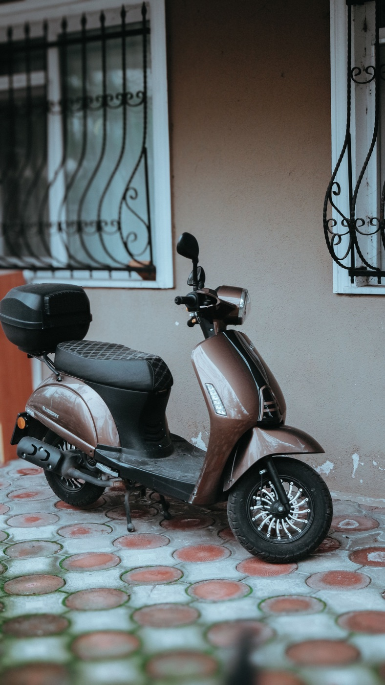
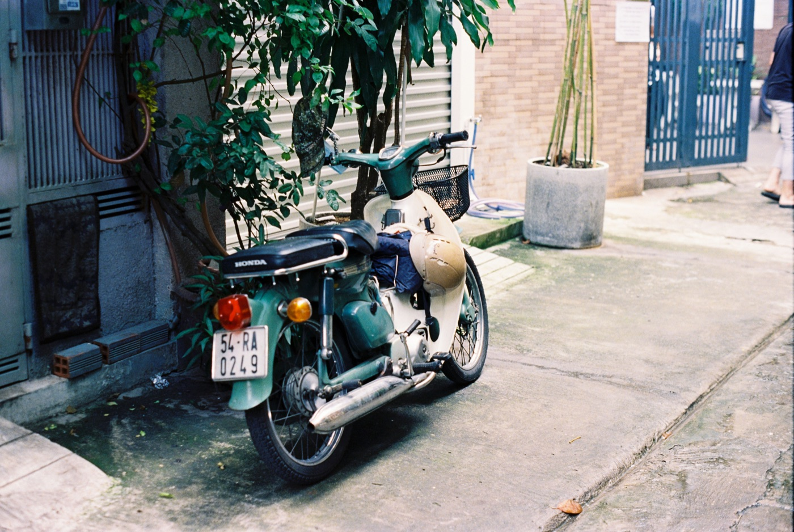

Что возить под сиденьем байка

Багажник скутера быстро заполняется случайными вещами. Гораздо полезнее собрать компактный постоянный набор, который защищён от дождя и не мешает закрытию сиденья. Он не заменяет сервис, но помогает спокойно решить бытовые ситуации в дороге.
Базовый ежедневный набор
- лёгкий дождевик в отдельном пакете;
- маленькая аптечка и личные лекарства;
- салфетки, антисептик и небольшая бутылка воды;
- зарядный кабель и компактный пауэрбанк;
- эластичный ремень или сетка для неожиданной покупки;
- контакты сервиса и владельца парковки в телефоне.
Все вещи лучше распределить по двум герметичным пакетам: один для электроники и документов, второй для грязных или мокрых предметов.
Инструменты без лишнего веса
Для городского скутера достаточно штатного ключа, небольшого фонарика, пары пластиковых стяжек и перчаток. Если умеешь ими пользоваться, можно добавить компактный набор для временного ремонта бескамерной шины и насос. Но опасные работы у дороги и разборка техники без опыта — плохая идея.

Документы и ключи
Не храни запасной ключ под сиденьем: человек, получивший доступ к багажнику, сразу получает и байк. Оригиналы документов бери согласно требованиям конкретной поездки, а защищённые копии держи в телефоне. Бумаги помещай в герметичный чехол, потому что влага попадает даже в закрытый багажник.
Чего не стоит оставлять постоянно
- наличные, банковские карты и паспорт;
- телефон, камеру и дорогие наушники;
- аэрозольные баллоны и зажигалки на жаре;
- еду, которая портится или привлекает насекомых;
- тяжёлые незакреплённые инструменты;
- бензин и другие горючие жидкости.
Проверка раз в месяц
Достань весь набор, просуши багажник, проверь срок аптечки и заряд пауэрбанка. Убедись, что замок сиденья закрывается без давления. Если приходится прижимать крышку, вещей слишком много: перегруженный отсек может повредить замок или проводку.
Для поездки за город
Добавь воду, солнцезащитный крем, офлайн-карту, полностью заряженный телефон и контакты точки назначения. Сообщи близкому человеку маршрут и примерное время возвращения. Набор должен соответствовать расстоянию, погоде и состоянию дороги.
Короткий вывод
Лучший набор — лёгкий, сухой и реально знакомый владельцу. Он помогает переждать дождь, зарядить телефон и закрепить покупку, но не превращает багажник в мастерскую. О безопасном размещении груза читай в статье как перевозить вещи на байке, а на случай остановки сохрани инструкцию что делать при поломке.